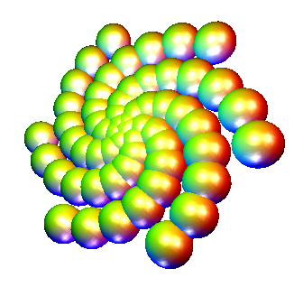

Fluxus manual v0.8 : (C) 2005 Dave Griffiths : dave at pawfal dot org : www.pawfal.org
7.0 Lights
Lights are needed to, err, light the scene. If there are none built, the
default light is a white one attached to the camera.

an example of crazy lighting
(make-light 0/1)
makes a new light. if the argument is true, then it's locked to the camera (in
camera space) else it's in world space. returns the light id
(clear-lights)
destroys all lights
(light-ambient id colvec)
(light-diffuse id colvec)
(light-specular id colvec)
(light-position id vec)
sets the parameters for the light